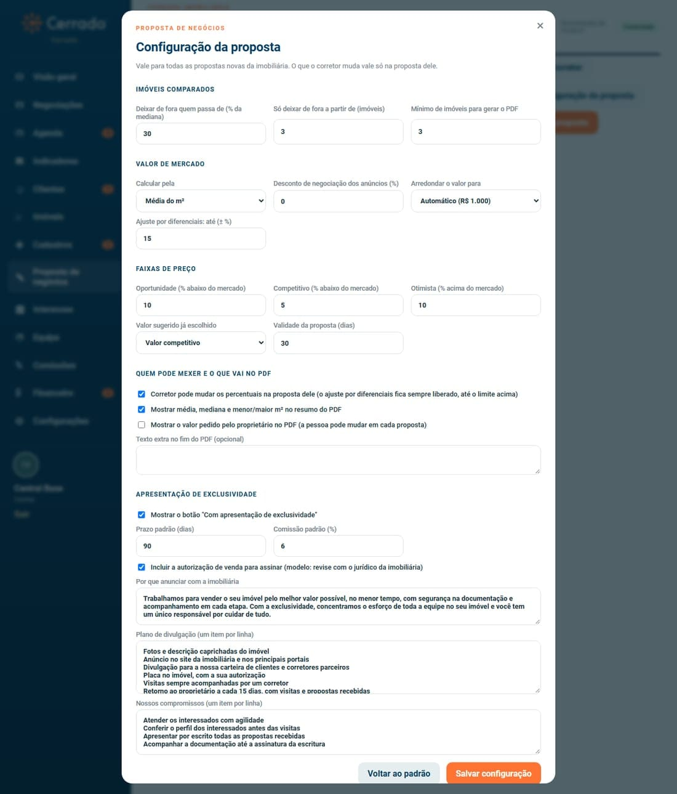

SKL Gestão Imobiliária · Proposta de negócios

A configuração vale para as propostas novas. As já salvas mantêm os valores com que foram feitas.
Voltar ao padrão recoloca os valores sugeridos pela SKL; só vale depois de salvar.
| Elaborado por | Versão | Data | Alteração |
|---|---|---|---|
| SKL Geo Soluções | 1.0 | 05/11/2026 | Emissão inicial. |